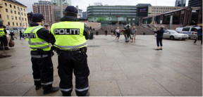

Se vi dicono che Oslo è la città più bella del Nord Europa non credeteci. Oslo è fredda, malfamata, inospitale ed il costo della vita è assolutamente inaffrontabile per i nostri standard Sud Europei. Ma Oslo è anche un posto speciale, con una sua anima ben definita e col suo fascino un po’ vichingo di città affacciata sul fiordo. Una micrometropoli moderna e multietnica schiacciata tra scenografiche colline e un mare punteggiato da una moltitudine di isole, in equilibrio precario tra asfalto e natura. Questa capitale dal fascino un po’ noir si presta in modo ottimale a far da sfondo agli adrenalinici thriller di Jo Nesbo, scrittore norvegese del momento e portabandiera del crime scandinavo. Harry Hole, il tormentato protagonista di quelli che, ad oggi, sono dieci libri caratterizzati da atmosfere hard boiled e paesaggi mozzafiato, è una creatura di questa città e prende vita tra le sue strade, i suoi scorci ed i suoi locali. Lasciate che ThrillerNord vi guidi, SULLE TRACCE DI HARRY, alla scoperta della vera Oslo raccontata nelle pagine di Jo Nesbo.
BISLETT- ST-HANSHAUGEN
A pochi passi dall’imponente Bislett Stadion troviamo una via molto speciale chiamata Sofies Gate. Qui, al civico 5, come testimonia la targhetta sul campanello, c’è la dimora di Harry Hole . Diciamo pure che il motto “nemo propheta in patria” in questo caso non vale, o quantomeno non vale per H.H , che qui è una vera star e attira frotte di turisti.
Se da casa di Harry giriamo l’angolo e imbocchiamo una via chiamata Dalsbergstein, troveremo un altro luogo ricorrente nelle peregrinazioni alcoliche del nostro eroe: l’Under Water Pub. Si tratta di un locale molto in voga, non solo per l’arredamento molto particolare che ricorda un fondale marino, ma anche e soprattutto per l’ottima musica live che offre.
A poche decine di metri troveremo un altro locale dove il detective è un habitué: il ristorante Schroder. Questo ristorante, che si trova al numero 8 di Waldemar Thranes Gate, non è esattamente la bettola che Nesbo descrive, anzi, è uno dei ristoranti più antichi della città e serve cibo tipicamente Norvegese a prezzi tutto sommato contenuti. Il ristorante è stato anche utilizzato come set cinematografico per le riprese di alcune scene del film “The Snowman” con Michael Fassbender nei panni di H.H., in uscita nel 2017.
Dato che siamo da Schroeder guardiamoci un attimo intorno e torniamo con la memoria alle pagine di NEMESI del 2002. Harry sta indagando su una rapina in banca degenerata in omicidio. Rakel è lontana. Lui è solo, si è messo in un grosso guaio e non riesce a resistere alle lusinghe del Jim Beam. Lo troviamo qui, in uno stato pietoso a tamponare la sua dipendenza alcolica con una birra, mentre cerca di mantenere una parvenza di sobrietà. Con lui c’è l’eccentrico psicologo Stale Aune, in veste di consulente della polizia e di amico. Insieme, cercano di decifrare lo strano comportamento del rapinatore e della vittima.
KARL JOHANS GATE/EGERTORGET

Questa strada lunghissima ed in gran parte pedonale, è la strada più famosa della Norvegia e collega Jernbanetorget, (l’impronunciabile piazza su cui si affaccia la Sentral Stasjon) al Palazzo Reale. Karl Johans gate non è solo l’arteria principale del centro storico ma è anche il cuore pulsante della movida multietnica della capitale grazie ai tanti negozi, locali, giardini ed edifici pubblici che vi si affacciano. Lasciandoci alle spalle l’imponente scultura bronzea della tigre di Jernbanetorget in pochi minuti si arriva allo Stortinget, il Parlamento Norvegese: un bell’edificio in arenaria sorvegliato da leoni di marmo e circondato da bellissimi giardini.
In prossimità del Parlamento Karl Johans Gate si allarga a formare una piazza chiamata Egertorget. Questa piazza è il salotto buono di Oslo, qui, sotto la grande insegna vintage del cioccolato Freia, ci sono tutti i punti vendita delle grandi griffes internazionali e una moltitudine di caffè e ristoranti alla moda.
Guardatevi intorno e calatevi nell’atmosfera del libro “La ragazza senza volto” del 2005: E’ una fredda serata di metà dicembre, per le strade del centro impazza la frenesia degli acquisti natalizi. A Egertorget si sta svolgendo un concerto organizzato dall’Esercito della Salvezza e c’è tantissima gente. Inizia a nevicare. Un sicario venuto dalla ex Jugoslavia si confonde tra la folla, approfitta della confusione, mira e spara con la sua calibro nove. A terra rimane un ragazzo in uniforme. La neve sotto il suo corpo si macchia di rosso. Il killer scappa: ha pianificato attentamente la fuga verso l’aeroporto ma tutto sembra andare tremendamente storto. Sulla scena del crimine arrivano il commissario Harry Hole, l’ispettore Halvolsen, il capo della scientifica Beate Lonn ed il commissario capo Gunnar Hagen.
SLOTTPARKEN/HOLBERGS GATE

Come tutti ben saprete la Norvegia è una monarchia costituzionale ereditaria. L’attuale sovrano Harald V e la consorte Sonia dimorano nel palazzo neoclassico del XIX secolo chiamato Kongelige Slott, (normalmente abbreviato in Slottet). Il castello, immerso nel bellissimo Slottparken, si trova all’estremità finale di Karl Johans Gate.
Il 17 maggio di ogni anno, per la festa nazionale Norvegese in cui si festeggia l’anniversario dell’entrata in vigore della Carta Costituzionale, i due km di strada rettilinea che congiungono Jernbanetorget al Castello diventano il percorso di una gioiosa e pittoresca parata che coinvolge un vero e proprio fiume di persone.
E’ proprio in una di queste giornate di festa che Harry -ne IL PETTIROSSO del 2000 - si trova a lottare contro il tempo per sventare un attentato. Il cecchino si è appostato nella lussuosa suite panoramica dell’Hotel Radisson Sas in Holbergs Gate, la strada che costeggia il parco del Castello: nel mirino telescopico del fucile di precisione Marklin c’è un bersaglio eccellente e nel cuore dell’attentatore un rancore che risale al 1945.
NATIONALTHEATRET
Ci troviamo ancora nel Qvadraturen, ossia nel centro della città, a percorrere di nuovo la maestosa Karl Johans Gate. Siamo nel tratto compreso tra il Parlamento e lo Slottet all’altezza di una piazzetta chiamata Johanne Dybwads Plass, dove fiori coloratissimi sfidano il tempo inclemente. Qui, proprio di fronte agli edifici dell’università si affaccia il Teatro Nazionale di Oslo. Il teatro aprì i battenti nel 1899: sul suo palcoscenico presero vita le creazioni del celebre scrittore e drammaturgo Henrik Ibsen.
Ed è proprio in questa location elegante che incontriamo Harry Hole. Siamo nel libro LA STELLA DEL DIAVOLO ed Harry sta indagando sulla scomparsa e sul probabile omicidio di una cantante di nome Lisbeth. Durante le indagini entra in confidenza con il vedovo, l’eclettico produttore Willy Barli, che lo convince a tentare di riconquistare la bella Rakel portandola alla prima del suo spettacolo, My Fair Lady. Ed eccoli qui, seduti nei posti migliori del teatro, di nuovo vicini.
HOLMENKOLLEN SKI JUMP
Situato sulla sommità delle collina di Holmenkollasen, nell’elegante quartiere di Holmenkollen, il trampolino per il salto con gli sci è sicuramente l’attrazione più spettacolare di Oslo. L’Holmenkollbakken è una torre alta e sottilissima che ospita al suo interno il museo dello sci e si staglia contro cielo della capitale norvegese. Dal suo belvedere sferzato dai venti gelidi del nord si può godere di una vista mozzafiato a 360° sulle meraviglie dell’Oslofjord e sui laghi e le foreste di conifere dell’entroterra. La terrazza, che si trova nel punto di partenza del saltatore, permette ai visitatori di immedesimarsi negli atleti che si lanciano da questa ripidissima rampa e atterrano nell’anfiteatro dopo voli mozzafiato.
Ed è proprio sulla terrazza del trampolino di Holmenkollen che incontriamo Harry Hole, in uno dei momenti più drammatici della sua vita. Siamo nella scena finale de L’UOMO DI NEVE. E’ una gelida notte polare e un rocambolesco inseguimento porta Harry ed il suo antagonista qui, dove un sottile parapetto li divide dal baratro. Harry è ferito ma non si sottrae al confronto finale. I ruoli di inseguitore e preda sembrano confondersi nel buio.
AKER BRYGGE
Aker Brygge è un quartiere trendy affacciato sulle placide acque del fiordo e nato dalle ceneri dell’industria cantieristica navale della città, andata irreversibilmente in crisi negli anni ‘80. Il risultato del restyling di questa zona marittima è una sorprendente via di mezzo tra Wall Street e i Docks di Londra.
Passeggiando lungo l’Oslofjord il paesaggio spazia dai palazzi a specchio pieni di eleganti uffici e negozi alla moltitudine di caffè e ristoranti affacciati sull’acqua, dalle imponenti navi da crociera alte come palazzi di dieci piani ai velieri vintage in legno con i loro maestosi alberi. Su una piccola altura svetta la splendida fortezza di Akershus con i suoi imponenti bastioni.
Aker Brygge è anche un ottimo punto di partenza per visitare, a bordo dei piccoli e pittoreschi traghetti, le isole e la deliziosa penisola di Bigdoy con i suoi tanti musei e le sue spiagge.
In NEMESI del 2002 Harry Hole-che ammette di sentirsi un pesce fuor d’acqua in questo luogo così snob e così “artificiale”- irrompe bruscamente nell’elegante Louise Restaurant (al numero 3 del lungomare Stranden), per parlare ad Arne Albu che si trova qui per un pranzo d’affari, e che sembra essere implicato nella misteriosa morte di Anna Bethsen.
BIGDOY
Dai moli di Aker Brygge è possibile imbarcarsi su uno dei piccoli traghetti che fanno la spola tra le tante isolette del fiordo e la penisola di Bigdoy.
Bigdoy è una zona residenziale molto elegante, raggiungibile anche via terra che, oltre ad offrire diverse spiagge, è anche un vero e proprio polo museale. Qui infatti troviamo il Norskfolkemuseum (museo del folklore norvegese, il museo Kontiki ( che contiene la zattera in legno di balsa a bordo della quale nel 1947 un equipaggio norvegese raggiunse la Polinesia dal Perù, lasciandosi portare alla deriva dalla corrente), il Norsk Maritimt Museum, ed il Frammuseet, meta ultima del nostro pellegrinaggio letterario sulle orme di Harry Hole.
Nell’edificio dalla facciata triangolare del Frammuseet è stata collocata la nave Fram, la robustissima imbarcazione di quercia e rame, ( realizzata per resitere alla pressione del ghiaccio) con cui nel 1893 l’esploratore Nansen partì da Oslo e tentò di raggiungere il Polo Nord senza riuscirci. Arrivò però nel punto più settentrionale mai raggiunto da un uomo e , dettaglio non da poco , riuscì a tornare indietro vivo e con l’imbarcazione intatta. L’interno della nave, grazie ad una serie di impalcature, è interamente visitabile e lungo il percorso ci sono tantissime gallerie fotografiche dedicate agli esploratori norvegesi ed alle loro scoperte geografiche.
LA FORTEZZA DI AKERSHUS
La fortezza, posta strategicamente sulla sommità di una collina sul fiordo di Oslo, fu costruita nel 1299 da Re Hakon V. Nel corso del XVII secolo, durante il regno di Kristian IV - periodo durante il quale la città assunse il nome di Christiania- il castello subì una drastica ristrutturazione in chiave rinascimentale. Oggi, l’Akershus Slott non è più dimora dei regnanti, ma viene utilizzata come location di rappresentanza per eventi mondani. Nel cortile è possibile assistere alla cerimonia del cambio della guardia che avviene tutti i giorni alle 13,30.
Ma questa affascinante fortezza medioevale ha anche un aspetto tetro e sinistro. Non a caso le guide locali promuovono “ghosts walks” notturne tra le mura di questo maniero. La triste fama di questo luogo affonda le sue radici nel periodo della seconda guerra mondiale, quando diventò sede del comando tedesco che governò la città dopo la precipitosa e rocambolesca fuga del Re e dei vertici dello Stato. Tra queste mura venne pronunciata ed eseguita la condanna a morte di quarantadue esponenti della resistenza e, per una sorta di macabra “par condicio”, dopo la liberazione, qui venne fucilato come traditore della patria anche Vidkun Quisling, fondatore del Nasjonal Samling, il partito fascista norvegese.
Ed è proprio davanti all’ingresso del Castello di Akershus che, nel romanzo IL PETTIROSSO, ritroviamo Harry Hole, chino sul cadavere di una vecchia signora, ad indagare per decifrare il significato di una lunga serie di omicidi che sembrano derivare da un passato lontanissimo.
FROGNERPARKEN/ VIGELAND PARK
Il Frognerparken è il parco pubblico più grande di Oslo. Al suo interno si trova il famoso Vigeland Park, un'area dedicata all'esposizione permanente di oltre duecento sculture ed altre opere che l'artista norvegese Gustav Vigeland (1869-1943) cedette alla città in cambio di una casa in Kirkevein, (una delle strade perimetrali del parco), poi trasformata in un museo dopo la morte dello scultore. L’opera più famosa del parco è IL MONOLITO, una colonna alta 17 m, ricavata da un unico pezzo di granito, in cui sono finemente scolpite 121 figure umane intrecciate tra loro.
Nella verde immensità del Frognerparken ci sono anche molti impianti sportivi, come per esempio la pista per il pattinaggio sul ghiaccio del Frognerstadion e le piscine del Frognerbadet.
Harry è un habitué del Frogner: spesso nei vari romanzi di cui è protagonista lo troviamo qui in compagnia di Oleg, figlio dell’amata Rakel. Ma soffermiamoci sul Frognerbadet, sulle sue tante vasche e soprattutto sulla spettacolare torre del trampolino per i tuffi. D’estate l’atmosfera è allegra e spensierata, ma nel gelido e buio inverno di Oslo tutto assume un’aria nettamente più tetra. Siamo ne IL LEOPARDO uscito in Norvegia nel 2009. Harry ha vissuto alcuni mesi ad Honk Kong dove si era auto-esiliato dopo la separazione da Rakel. Viene riportato in Norvegia dall’agente Kaya Sollness su ordine del capo della polizia Gunnar Hagen. A Oslo un serial killer sta seminando il panico e solo Harry ha le competenze per catturarlo ponendo fine così anche alla guerra di potere in atto tra l’Anticrimine e la Kripos. L’indagine di Harry Hole parte dall’ omicidio della parlamentare Marit Olsen, rapita mentre faceva jogging di sera nel parco e trovata impiccata alla torre del trampolino.
PLATA
 Plata è un rettangolo di asfalto situato tra la Sentral Stasjon ed il fiume Akerselva, che in questo punto viene inghiottito dall’asfalto per continuare la sua corsa fino all’Oslofjord sottoterra. Si parla di questo luogo in quasi tutti i romanzi di Nesbo, dato che questa è la zona franca dello spaccio di droga. Qui la polizia vigila ma non interviene.
Ma per descrivere al meglio Plata userò i pensieri di Martine, la giovane ufficiale dell’Esercito della Salvezza che ne LA RAGAZZA SENZA VOLTO del 2005 aiuta Harry Hole nelle indagini su un omicidio.
“ A volte Martine pensava che Plata fosse la scala che portava all’inferno. (…) Il vero motivo era che il confine immaginario segnato dalla linea bianca sull’asfalto di Jernbanetorget nuoceva all’immagine della città. Inoltre, permettere che la droga passasse apertamente di mano in mano nel centro stesso della capitale non era forse uno spaventoso fallimento per la socialdemocrazia più evoluta - o al meno più ricca- del mondo?”
MUNCH MUSEET
Il museo intitolato ad Edvard Munch ( 1863-1944), si trova nella parte orientale della città di Oslo, nel quartiere di Toyen. L’edificio, dal design molto particolare, è opera degli architetti Gunnar Fougner e Einar Myklebust: iniziato nel 1946, fu inaugurato nel 1963 in occasione del centenario della nascita di Munch, per accogliere le 1150 tele, le 13 sculture e le migliaia di stampe, disegni, libri e oggetti donati alla città dal celebre pittore.
L’opera più conosciuta dell’artista simbolista è l’inquietante URLO (Skrik ), dipinto in quattro diverse versioni dal 1893 al 1910. L’URLO più celebre è conservato alla Galleria Nazionale di Oslo, mentre l’omonima opera datata 1910, che è stata in passato oggetto di due clamorosi furti, si trova al Munch Museet.
Nelle sale del Museo Munch non troviamo Harry Hole, bensì due personaggi che complottano alle sue spalle. Siamo ne IL Leopardo del 2009 e un serial killer sta seminando orrore e morte in Norvegia. L’odioso capo della Kripos Mikael Bellman vuole boicottare l’indagine che Harry Hole sta conducendo - con successo- per conto dell’Anticrimine e, per raggiungere il suo scopo, ha infiltrato una spia nella squadra di H.H. Per non dare nell’occhio, i due congiurati si incontrano a Toyen, che si trova a metà strada tra il distretto di polizia di Gronland e la sede della Kripos a Bryn. E proprio davanti alle tele di Munch ed in particolare davanti alle opere Donna Vampiro e Fanciulla Malata e si scambiano informazioni cruciali per distruggere Harry.
EKEBERG
La collina di Ekeberg domina la parte sudorientale di Oslo e, oltre ad essere un punto panoramico, è anche una zona che, per diverse ragioni, ci offre molte suggestioni storiche e artistiche. Nel 2013 il ricco mecenate Christian Ringnes ha inaugurato un parco scultoreo contenente opere di artisti internazionali come Dalí, Chadwick, Hudson e Ung. Inoltre, lo skyline del fiordo e delle sue isole che da qui si può ammirare, è anche lo sfondo del celebre URLO di Munch. Ma il monte Ekeberg evoca anche l’epopea della spedizione polare del dirigibile Norge. Nell’aprile del 1926,il dirigibile, con a bordo l’italiano Nobile, il norvegese Amundsen e lo statunitense Ellsworth, partì da Ciampino, fece tappa sull’Ekeberg e ripartì alla volta delle Isole Lofoten e dell’Alaska, superando così il circolo polare artico.
In Nemesi del 2002, qualcuno sta ricattando Harry e minaccia di incastrarlo per l’omicidio di Anna Bethsen. Harry Hole porta l’ispettore Jack Halvorsen su questa altura, che si trova ad appena cinque minuti dalla centrale di polizia, per parlare. E’ autunno e il vento di nord-ovest porta odore di salsedine. Harry rivela al collega di aver taciuto particolari compromettenti dell’indagine che potrebbero portare alla sua incriminazione e chiede a Jack di mantenere il segreto, anche se questo può costargli la carriera. Halvorsen tentenna ma poi accetta. H.H. approfitta della location per spiegare a Jack, che viene da un’altra città, alcune cose di Oslo, ed in particolare l’etimologia stessa del nome della capitale norvegese. Os significa Monte e Lo è il nome della pianura che sorge sotto l’Ekebergasen, su cui si sviluppa il centro storico.
VESTRE AKER GRAVLUND
Il cimitero di Vestre Aker- il Cimitero dell’Est- è situato nel quartiere di Frogner ed è stato inaugurato nel 1902. Con i suoi 100 ettari di estensione è di gran lunga la necropoli più vasta della Norvegia. Al suo interno si trovano anche un cimitero di guerra, in cui riposano le spoglie dei soldati inglesi caduti durante la liberazione dall’occupazione nazista, ed una piccola e graziosa chiesetta con la facciata costruita in granito e pietra ollare. In questa vastissima città dei morti che ospita anche tombe illustri, riposano anche la madre ed alcuni colleghi di Harry Hole.
Ma veniamo a noi. Siamo nel Thriller LO SPETTRO del 2011, il libro più noir e più cupo della serie dedicata ad H.H. Harry, che da qualche tempo vive ad Hong Kong, torna frettolosamente in patria per seguire un’indagine che coinvolge uno dei suoi affetti più cari ed è disposto a tutto. Arriverà persino ad addentrarsi di notte nel cimitero di Vestre Aker in compagnia di un complice piuttosto goffo e a profanare la tomba della vittima di un omicidio per cercare prove sul cadavere. Scoprirà cose interessanti, ma verrà scoperto e dovrà affrontare una rocambolesca fuga attraverso il cimitero ed il vicino parco Vigeland, braccato dalle forze dell’ordine.
GRUNERLOKKA
Grunerlokka è un quartiere trendy ed un po’ alternativo che si sviluppa ad est del fiume Akerselva, ed è frutto di un brillante recupero urbanistico di una zona industriale in rovina. Le sue strade coloratissime e decorate da graffiti ed opere di street art sono l’ideale per chi vuole concedersi un po’ di shopping vintage nei tanti negozi e mercatini specializzati.
Al numero civico 48 di Thorvald Meyers gate, la via principale di Grunerlokka, si può ammirare anche la casa in cui crebbe e passò gran parte della sua vita, il celebre pittore Edvard Munch.
Per ironia del destino, questo quartiere così allegro e scanzonato sarà teatro di immani tragedie per Harry Hole.
Tuffiamoci per un attimo nell’atmosfera de IL PETTIROSSO del 2000. E’ sera e fa molto freddo. Una ragazza molto vicina ad Harry sta percorrendo il sentiero innevato lungo il fiume Akerselva per raggiungere la casa del fidanzato. E’ molto agitata perché ha appena scoperto uno scottante segreto. Si accorge di essere seguita quando oramai è troppo tardi. Un colpo di mazza da baseball alla nuca pone fine alla sua vita e fa sprofondare Harry in un mare di sensi di colpa e di Jeam Beam. Smascherare il mandante dell'assassino diventerà per lui una vera e propria ossessione.
OPERAHUSET
Il teatro dell’Opera di Oslo, sede del Norwegian National Opera and Ballet, è situato a pochi passi dalla stazione ferroviaria e si affaccia sulla punta più interna del fiordo.
La sua struttura avveniristica emerge come un iceberg di vetro e candido marmo di Carrara dalle acque e si staglia contro il cielo perennemente grigio della capitale. L’edificio, completato nel 2008, costituisce il tassello finale di un complesso piano riassetto urbanistico delle aree portuali.
Il teatro ha proporzioni mastodontiche: al suo interno si trovano 1100 stanze, un auditorium con 1365 posti e due sale da concerto da 200 e 400 posti. La peculiarità di questa costruzione risiede nell’estrema accessibilità delle superfici esterne. Il tetto degrada dolcemente fino alla superficie del mare e funge da camminamento. Si può così raggiungere la sommità dell’edificio senza incontrare nessuna barriera architettonica e da qui godere del meraviglioso panorama sull’Oslofjord.
Nel thriller LO SPETTRO del 2011, un Harry Hole oramai quarantacinquenne e fuori dal tunnel dell’alcolismo torna precipitosamente ad Oslo per tirare fuori dai guai Oleg, il figlio diciottenne dell’ex fidanzata Rakel. Dopo tre anni trascorsi ad Hong Kong Harry stenta quasi a riconoscere la sua città. Giunto nel quartiere di Bjorvika, un tempo ghetto destinato ad emarginati ed eroinomani, si trova al cospetto della faraonica struttura del teatro dell’opera finalmente completata e prova un certo turbamento.
Harry sembra proprio non gradire l’enorme spreco di denaro pubblico destinato al nuovo salotto buono della città e percepisce l’Operahuset come un fastidioso corpo estraneo nel panorama del fiordo.
ULLEVALSVEIEN- VAR FRELSERS GRAVLUND
Siamo nel quartiere di St. Hanshaugen, a due passi da Sofies gate, dove vive Harry Hole e precisamente in Ullevalsveien, una lunga e trafficatissima arteria stradale che dal centro di Oslo porta alla zona periferica di Ulleval. Siamo nel thriller LA STELLA DEL DIAVOLO del 2003 e c’è appena stato un omicidio. Una ragazza è stata uccisa una palazzina accanto al cimitero monumentale di Var Frelsers, dove riposano tra gli altri anche Edvard Munch e Henrik Ibsen
Harry Hole è alla deriva, l’ossessione per un omicidio irrisolto lo ha allontanato dalla donna che ama e lo ha fatto precipitare di nuovo nell’alcool. Nel tentativo di scuoterlo, il suo capo Bjarne Moller lo costringe ad occuparsi del caso. La scena del crimine è a due passi da casa sua ed Harry la raggiunge a piedi, contrariato dal fatto che questa strada sia più adatta alle auto che agli esseri umani. Dopo aver fatto alcune osservazioni sul corpo interroga i vicini. Conosce così Vibeke Knutsen, una donna un po’ volgare e non particolarmente affascinante, ma che per qualche insondabile motivo lo intriga. Si incontrano fortuitamente alcuni giorni dopo all’Underwater pub. Entrambi soli, entrambi male in arnese. Le loro, sono due solitudini che si incrociano e che si attraggono. Ma lei sta con Anders e lui appartiene solo a Rakel: si rendono conto che non potrà funzionare. Si congedano davanti al portone di lei in Ullevalsvaien: lei lo bacia sulla guancia . Harry respira il suo odore e le sussurra: -Forse in un’altra vita …
CARCERE DI BOTSEN
Come racconta Jo Nesbo in una sua intervista, la Oslo fredda e ostile dei suo libri assomiglia un po’ alla Gotham City di Batman. E uno dei luoghi in cui questa somiglianza appare lampante è situato proprio al numero 41 di Grønlandsleiret, sede del carcere di Botsen.
Sono tantissimi gli episodi che vedono Harry Hole tra le mura della prigione cittadina, sia in qualità di visitatore che in veste di detenuto. Ne ho scelti due:
In Nemesi, Harry varca la soglia di Botsen per stringere un patto con l’enigmatico zingaro Raskol, che sembra custodire tutti i segreti della criminalità di Oslo.
Ne Il Leopardo invece, uno stanzino negli scantinati del carcere, a cui si accede direttamente mediante un tunnel sotterraneo dalla vicinissima centrale di polizia, diventa l’ufficio segreto di Harry , Bjorn Holm e Kaya Sollness, incaricati di svolgere un’indagine top secret su un serial killer.
CENTRALE DI POLIZIA DI GRONLAND
Il quartier generale della polizia di Oslo si trova al numero 44 di Grønlandsleiret, nel multietnico quartiere di Gronland, ribattezzato da H.H stesso “la piccola Karachi”. Al sesto piano del grande stabile affacciato sul parco inizia la storia di Harry Hole, giovane e promettente poliziotto con alle spalle studi di giurisprudenza ed una specializzazione in serial killer conseguita all’FBI. In queste stanze Harry farà carriera arrivando a diventare commissario, nonostante il suo vissuto problematico e nonostante tutti i poteri forti che si troverà contro.